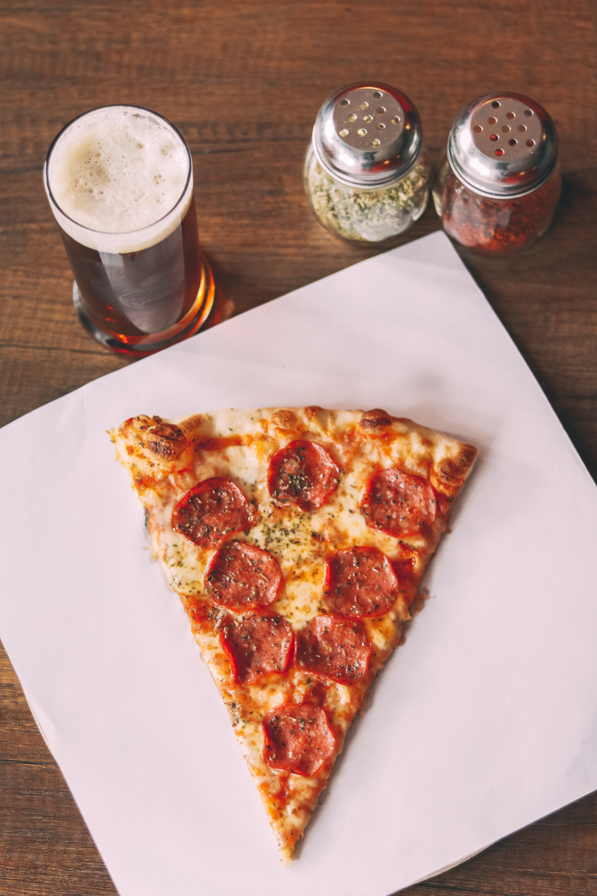

Pizza

This pizza is sure to please any true pizza lover!
Ingredients:
- ½ (12 ounce) can Tomato Paste
- 1 teaspoon dried oregano, crushed
- 1 teaspoon dried basil, crushed
- ½ teaspoon garlic powder
- ½ teaspoon onion powder
- ½ teaspoon sugar
- ½ teaspoon salt
- ¼ teaspoon black pepper
- 3¼ cups all-purpose flour, or more as needed
- 2 (.25 ounce) envelopes pizza crust yeast.
- 1 tablespoon sugar
- 1½ teaspoons salt
- 1⅓ cups very warm water (120 degrees F to 130 degrees F)
- ⅓ cup oil
- 1 (6 ounce) of Pepperoni
- 1 cup shredded mozzarella cheese
Steps
This delicious pizza can be made relatively easy by following the steps below.
Make sure to have all of your ingredients ready!
- For sauce: Combine all sauce ingredients with 1/2 cup water in a medium bowl; set aside for flavors to develop while making crust. Freeze remaining paste .
- For crusts: Combine 2 cups of flour with the dry yeast, sugar and salt. Add the water and oil and mix until well blended (about 1 minute). Gradually add enough remaining flour slowly, until a soft, sticky dough ball is formed.
- Knead for about 4 minutes, on a floured surface, until dough is smooth and elastic. Add more flour, if needed. (If using RapidRise® Yeast, let dough rest, covered, for 10 minutes.)
- Divide dough in half. Pat each half (with floured hands) into a 12-inch greased pizza pan OR roll dough to fit pans.
- For pizzas: Preheat oven to 425 degrees F. Top crusts with sauce, pepperoni and cheese.
- Bake for 18 to 20 minutes until crusts are browned and cheese is bubbly. For best results, rotate pizza pans between top and bottom oven racks halfway through baking.
Return Home